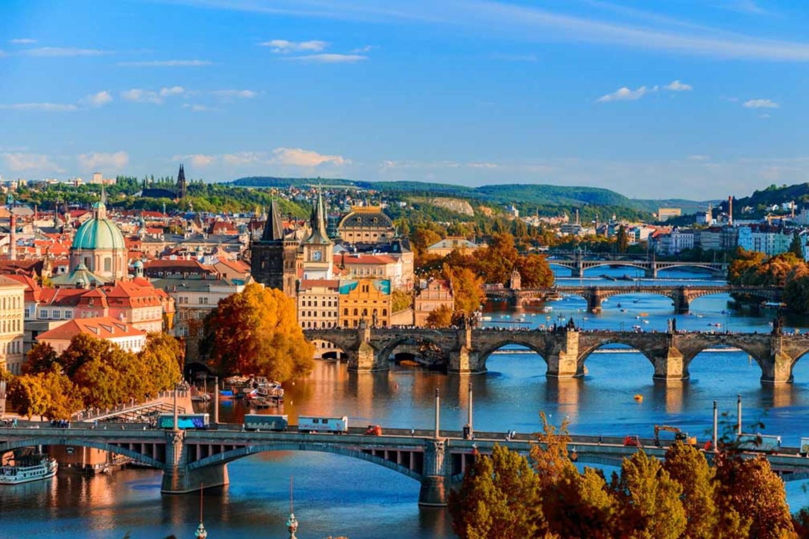

Prague
Allow yourself to experience the magical city of Prague. The vibrant city is perfect for history lovers as well as folks interested in the contemporary art. The metropolis is waiting for you and we are here to make your trip unforgettable!
Price: 40 EUR